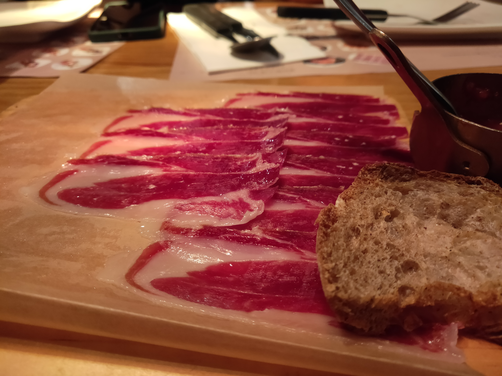
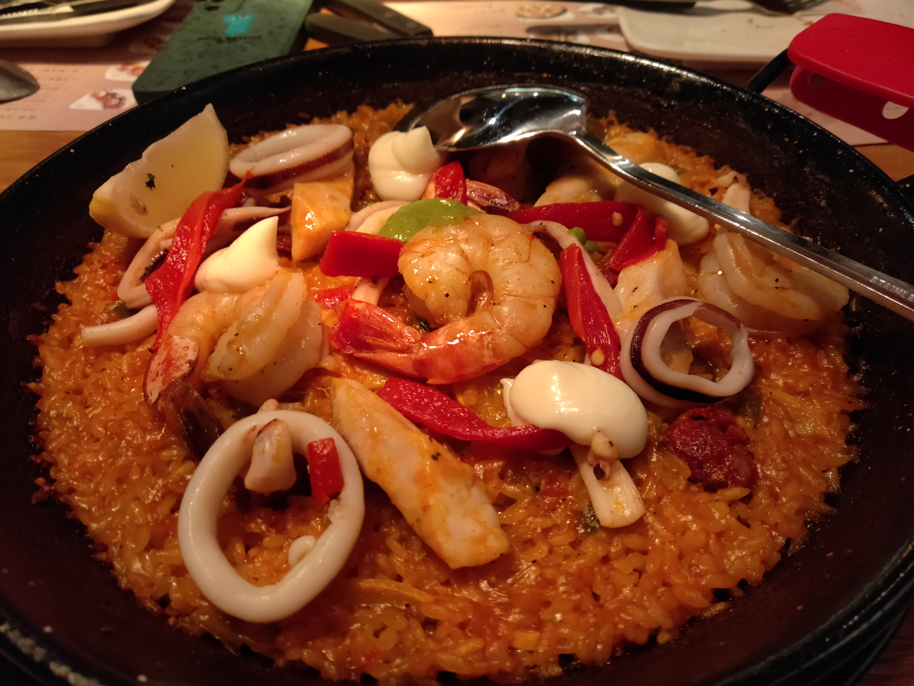
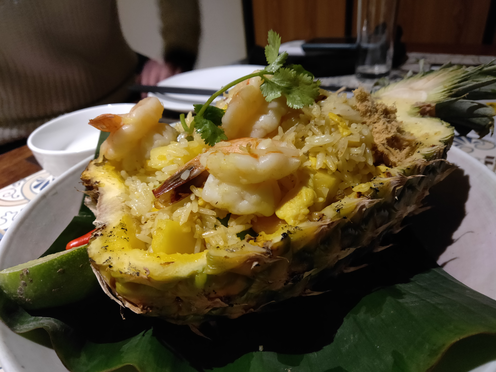
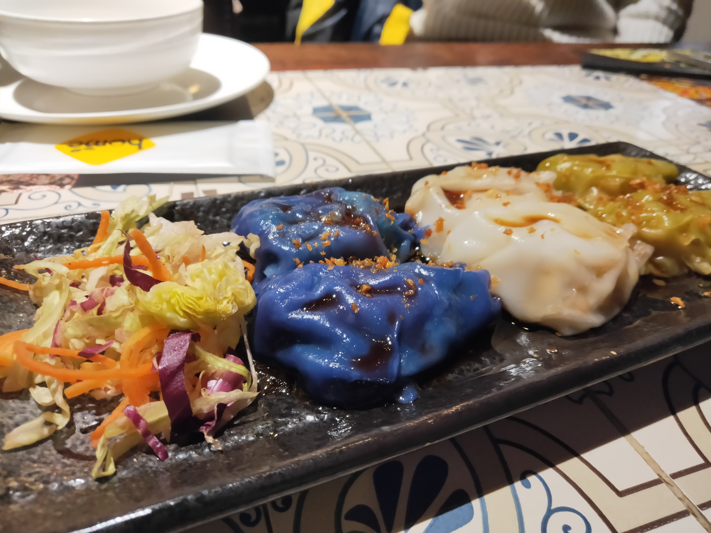

There are no other cities in China that can be as international as Shanghai. In Shanghai, you can enjoy food from all over the word without actually going abroad.
I am a big fan of Japanese food. I have also traveled to Japan multiple times for its delicious food. I could say that there is not much difference between Japanese food in Shanghai and that in Japan. There are Japanese food buffet, sushi train, omakase, etc. One of my favourite restaurant is Bird RYU SHIZUKU in Shanghai. It has the best sushi I have ever eat!
Spanish food and Indian food are also very welcome in Shanghai. You can almost see them in every supermarket in Shangai. Among all the food, I love Spanish Jamon Iberico, Spanish seafood rice, Indian pineapple rice and Indian dumplings the most.
Spanish Jamon Iberico
Spanish Seafood Rice
Indian Pineapple Rice
Indian Dumplings
